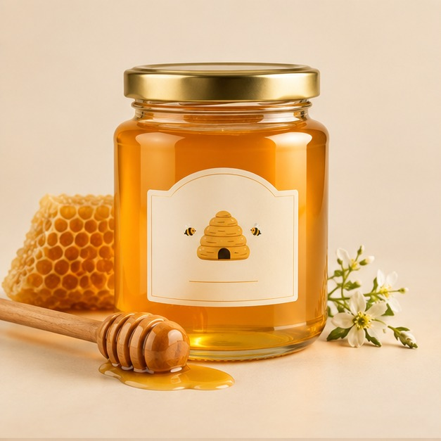
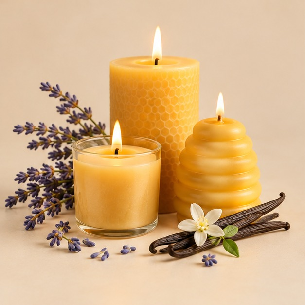
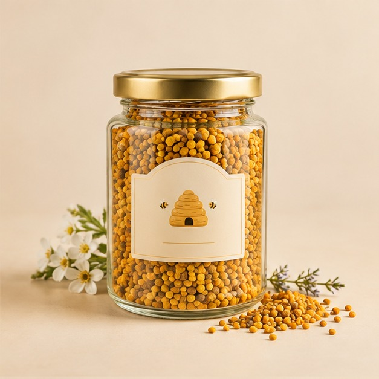

🌼 Del campo al hogar
El viaje de una gota de miel.
Del cuidado de las colmenas al envasado: conoce las etapas que ayudan a mantener una experiencia clara y cercana.
01
Cuidado de las colmenas
Revisión periódica y manejo responsable del entorno de las abejas.
02
Extracción
La miel se extrae procurando conservar sus características naturales.
03
Filtrado y envasado
Se filtra y se prepara cada presentación para tu pedido.
04
Control de calidad
Antes de salir, revisamos presentación, stock y pedido.
TRANSPARENCIA
Conoce lo que hay detrás del frasco.
Mostramos con claridad las etapas de cuidado, cosecha, revisión y envasado. Las características de cada cosecha, incluida su nota floral, pueden variar según la floración y la temporada.
Preguntar por el procesoDel campo al hogar
Una cadena de cuidado, desde el entorno floral hasta tu mesa.


